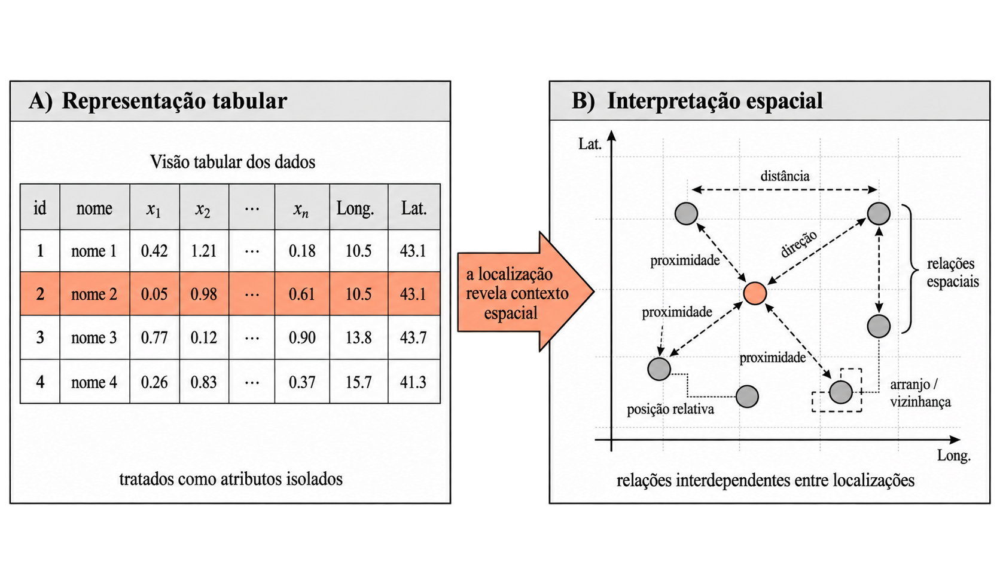
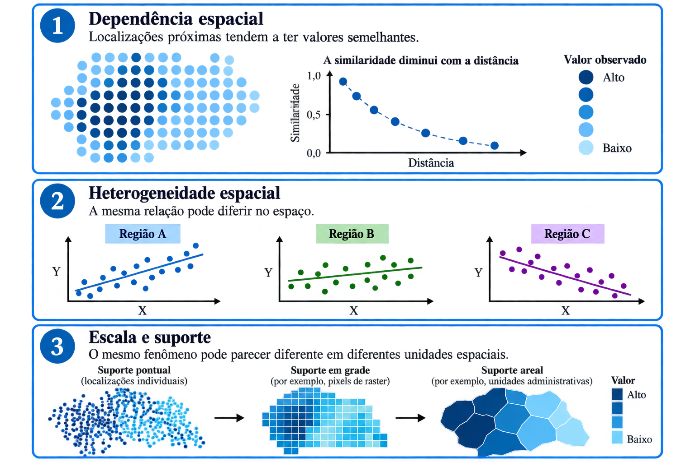
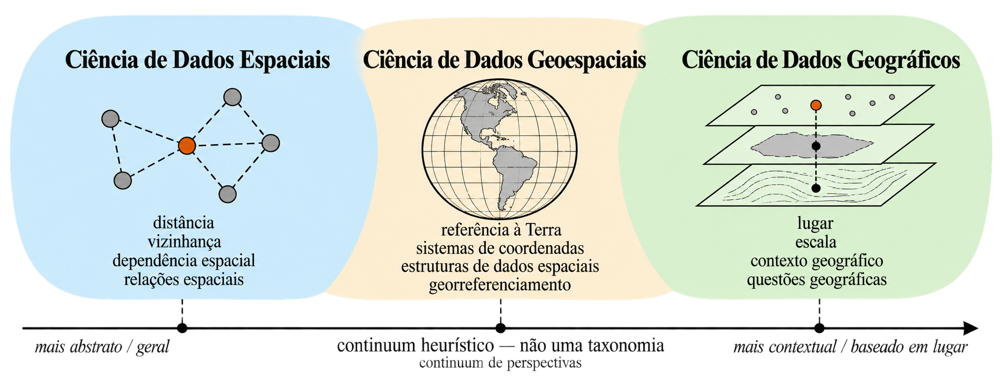
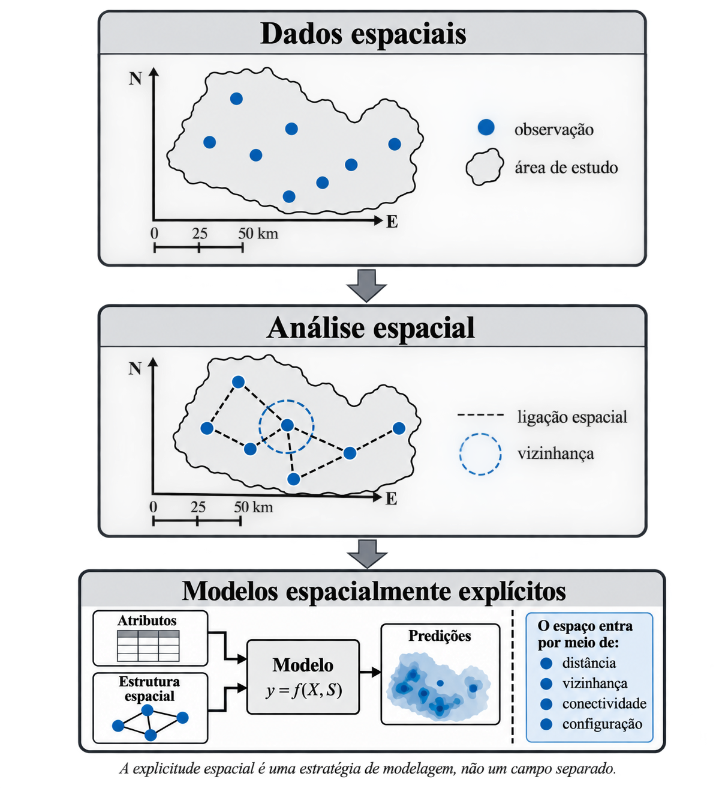
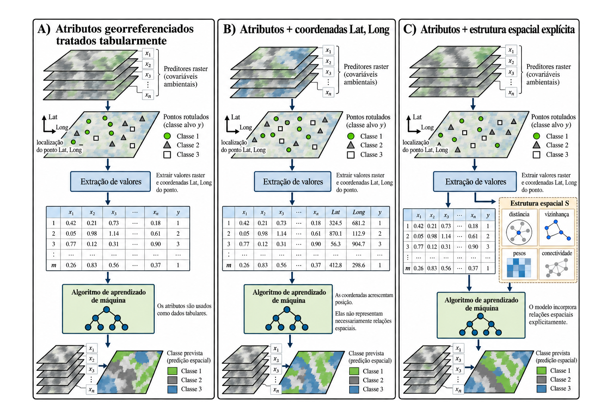
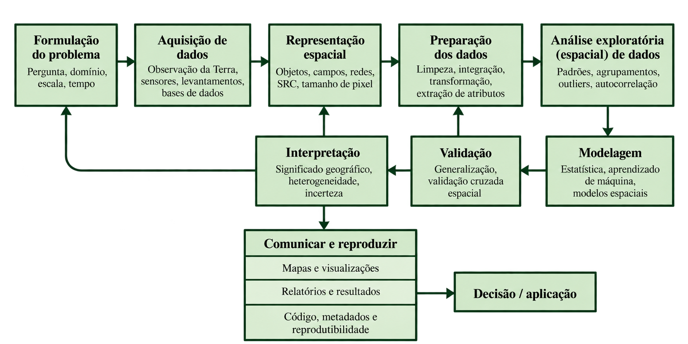

2 Fundamentos de Ciência de Dados Geoespaciais
2.1 Quando os dados possuem localização
Nas seções anteriores, uma observação pôde ser representada, de forma simplificada, como um conjunto de atributos. Em um problema de regressão, por exemplo, cada unidade apresenta valores para uma variável resposta e para um conjunto de preditores; em um problema de classificação, esses atributos são utilizados para estimar a classe correspondente. Essa representação tabular permite tratar cada linha como uma unidade de análise descrita por suas características. Entretanto, muitos fenômenos observados no mundo real apresentam uma propriedade adicional: cada observação ocorre em algum lugar e, em muitos casos, ocupa determinada porção do espaço. A introdução dessa dimensão modifica a forma como os dados podem ser representados e analisados.
Em termos conceituais, a passagem pode ser expressa inicialmente como a transição entre uma observação definida por seus atributos e outra que incorpora sua localização. Contudo, adicionar latitude e longitude como duas novas colunas de uma tabela não é suficiente para explorar a natureza espacial dos dados. Pebesma e Bivand (2023) alertam para os limites de tratar coordenadas da mesma maneira que variáveis convencionais, enquanto Rey, Arribas-Bel e Wolf (2023) enfatizam que a “geografia dos dados” envolve as relações possibilitadas pela localização. Assim, interessa menos a coordenada considerada isoladamente do que aquilo que ela permite estabelecer em relação às demais observações [@pebesma2023; @rey2023], como sintetizado na ?fig-observacao-tabular.

Essa diferença pode ser representada, de forma esquemática, por:observação convencional=atributos=
e
Observação geoespacial=atributos+localização+relações espaciais.=++.
A localização, por sua vez, não precisa corresponder a um ponto sem extensão. Uma observação pode representar uma estação meteorológica, um trecho de rio, um município, uma parcela de terreno ou uma célula de uma grade. A informação espacial associa atributos a uma geometria e a um determinado suporte espacial. Essa associação permite representar fenômenos como objetos discretos, superfícies contínuas ou redes, conforme a natureza daquilo que está sendo observado (Pebesma; Bivand, 2023; Moraga, 2024; Scheider et al., 2020). Scheider et al. (2020), por exemplo, ressaltam que diferentes concepções do fenômeno, como objeto, campo ou rede, conduzem a diferentes representações computacionais e formas de análise (pebesma2023; moraga2024; scheider2020).
Uma vez que as observações possuem posição e geometria, torna-se possível caracterizar como elas se relacionam umas em relação às outras. Duas unidades podem estar próximas ou distantes, situadas em determinadas direções ou separadas por diferentes formas de deslocamento. A distância, nesse contexto, deixa de constituir uma propriedade de uma observação individual e passa a descrever uma relação entre pelo menos duas localizações. Além disso, a noção de proximidade depende da representação do espaço e do problema analisado. Uma separação pode ser expressa por distância geométrica, percurso sobre uma rede ou outra medida compatível com o fenômeno considerado (Anselin, 1989; Pebesma; Bivand, 2023). A posição relativa introduz, portanto, informação que não está contida nos atributos de cada registro quando considerados separadamente (anselin1989; pebesma2023).
Quando essa estrutura relacional é considerada juntamente com os atributos, a posição de uma observação passa a fornecer contexto para interpretar os valores registrados. Observações próximas ou conectadas podem compartilhar condições ambientais, processos sociais, infraestrutura, fluxos ou outros mecanismos que atuam no espaço. Essa possibilidade está associada a uma característica recorrente dos fenômenos geográficos: valores observados em localizações próximas frequentemente apresentam algum grau de relação. Goodchild (2009) discute essa propriedade a partir da Primeira Lei da Geografia, segundo a qual entidades próximas tendem a apresentar maior semelhança do que entidades distantes. O tratamento formal dessa propriedade envolve conceitos de dependência e autocorrelação espacial, que serão desenvolvidos posteriormente (goodchild2009).
As relações entre observações, quando consideradas para todo o conjunto de dados, produzem uma configuração espacial. Um fenômeno pode apresentar concentrações de valores semelhantes em determinadas partes da área estudada, diferenças entre regiões ou variações graduais ao longo do espaço. A configuração observada depende ainda de como o fenômeno foi representado, da extensão considerada e da escala em que as observações foram produzidas. Por essa razão, a análise de dados geoespaciais não se limita a perguntar quanto vale determinado atributo, mas inclui questões como onde os valores ocorrem, como as observações se distribuem e quais relações espaciais organizam esse padrão. Goodchild (2009) ressalta que fenômenos geográficos apresentam variação espacial e que conclusões obtidas em uma área limitada dependem das condições e dos limites espaciais considerados (goodchild2009).
Essa estrutura tem consequências para a análise. Muitos procedimentos estatísticos convencionais partem da ideia de que cada observação fornece uma parcela independente de informação. Em dados espaciais, essa condição pode não ser satisfeita quando unidades próximas compartilham processos ou apresentam valores relacionados. Anselin (1989) destaca que a dependência entre observações espaciais reduz a quantidade de informação independente contida em um conjunto de dados e modifica pressupostos utilizados por procedimentos estatísticos usuais (anselin1989).
A passagem da ciência de dados convencional para a ciência de dados geoespaciais decorre, portanto, de uma mudança na própria estrutura do problema. Quando a localização é conhecida, torna-se possível definir geometrias, comparar posições, estabelecer proximidades, reconhecer conexões e interpretar a organização conjunta das observações. O espaço deixa de funcionar somente como referência para indicar onde cada registro se encontra e passa a participar da estrutura analítica que conecta os registros entre si. Essa ideia pode ser condensada na formulação que orientará os próximos tópicos deste capítulo: a localização não constitui apenas mais uma variável do conjunto de dados; ela estabelece relações entre as observações. Algumas propriedades recorrentes dos dados espaciais que decorrem dessa estrutura são sintetizadas na Figura 2.1.

2.2 Ciência de Dados Espaciais, Geoespaciais e Geográficos
A literatura contemporânea emprega as expressões Spatial Data Science, Geospatial Data Science e Geographic Data Science para designar domínios com forte sobreposição conceitual e metodológica. Não há uma taxonomia consensual que estabeleça fronteiras rígidas entre essas denominações. Em diferentes obras, termos distintos são utilizados para tratar problemas relacionados a dados localizados, métodos espaciais, computação, estatística e ciência de dados. Scheider et al. (2020, scheider2020) mostram, inclusive, que a própria condição da Geographic Data Science como disciplina científica autônoma permanece em debate e propõem compreendê-la, em seu estado atual, como uma comunidade interdisciplinar de prática. Essa diversidade terminológica recomenda cautela ao interpretar os termos como campos independentes.
Apesar das diferenças de nomenclatura, as três expressões compartilham um núcleo conceitual. Elas aproximam práticas da ciência de dados de formas de representar, explorar, analisar e modelar observações cuja localização e estrutura espacial possuem relevância para o problema investigado. Nesse núcleo comum encontram-se a representação computacional de dados espaciais, a análise de relações entre observações, a estatística espacial, a modelagem e, mais recentemente, métodos de machine learning e inteligência artificial aplicados a dados espaciais. A diferença entre as denominações aparece menos na existência de um conjunto exclusivo de técnicas e mais na maneira como cada tradição enfatiza o significado do espaço, da localização e do contexto geográfico (Pebesma; Bivand, 2023, pebesma2023; Rey; Arribas-Bel; Wolf, 2023, rey2023; Scheider et al., 2020, scheider2020; Janowicz et al., 2020, janowicz2020; Moraga, 2024, moraga2024).
Entre essas denominações, Spatial Data Science admite o sentido mais geral de espaço. O termo concentra-se nas propriedades espaciais das observações e dos processos, incluindo localização, geometria, suporte, distância, vizinhança e relações espaciais. Nessa perspectiva, o domínio de análise pode ser representado matematicamente sem que precise corresponder exclusivamente à superfície terrestre. Dados geoestatísticos, dados de área e padrões de pontos, por exemplo, podem ser formulados em domínios espaciais nos quais a posição das observações integra a definição do processo estatístico (Moraga, 2024, moraga2024). O uso de spatial permite, portanto, incluir problemas definidos em espaços cartesianos ou outros domínios nos quais relações espaciais sejam relevantes, inclusive fora do sentido estritamente geográfico. Essa amplitude conceitual herda diretamente o vocabulário da econometria espacial consolidada por Anselin (anselin1989).
Geospatial Data Science constitui um campo interdisciplinar na interface entre a Ciência de Dados e a Ciência da Informação Geográfica (GIScience), com suporte de métodos e tecnologias da Geoinformática. Dedica-se à análise de dados com referência espacial terrestre, nos quais propriedades como localização, distância, vizinhança e forma integram o próprio problema analítico e frequentemente se associam à dimensão temporal. O campo combina métodos estatísticos, computacionais e de aprendizado de máquina com formas de representação e análise adequadas aos dados geoespaciais.
Por tratar de fenômenos localizados na superfície terrestre, na atmosfera, ou na subsuperfície, a análise requer referência espacial consistente e, conforme a aplicação, sistemas de referência de coordenadas e projeções cartográficas adequados. Sua abordagem utiliza estruturas de dados, bancos de dados espaciais, serviços e ambientes computacionais para organizar, processar e analisar informações geoespaciais. No contexto da observação da Terra, grandes coleções de imagens podem ser estruturadas como cubos de dados espaço-temporais, permitindo sua harmonização e análise sistemática ao longo do espaço e do tempo (Camara et al., 2021; Pebesma & Bivand, 2023) .
Geographic Data Science, por sua vez, atribui maior centralidade à natureza geográfica da pergunta investigada. Rey, Arribas-Bel e Wolf (2023, rey2023) apresentam o campo como uma forma de aplicar a ciência de dados a problemas e dados geográficos por meio da combinação de raciocínio computacional e raciocínio geográfico. Nessa perspectiva, a localização participa da interpretação do fenômeno por meio de relações, contexto e organização geográfica, e conceitos como lugar, escala e configuração territorial influenciam a formulação das questões. Os autores procuram, inclusive, apresentar agrupamentos, valores atípicos e outros conceitos estatísticos a partir de uma perspectiva geográfica, em vez de limitar o tratamento do espaço à presença de coordenadas (Rey; Arribas-Bel; Wolf, 2023, rey2023). Scheider et al. (2020, scheider2020) reforçam essa dimensão ao mostrar que questões geográficas podem ser decompostas por conceitos espaciais como localização, campo, objeto, evento e rede.
A partir dessas diferenças de ênfase, pode-se utilizar um gradiente terminológico como recurso de organização conceitual. Em uma extremidade, espacial remete ao espaço em sentido mais geral e formal, abrangendo problemas em que localização, geometria, suporte, distância, vizinhança e dependência espacial integram a estrutura dos dados ou dos processos, inclusive em domínios que não precisam corresponder estritamente à superfície terrestre; essa perspectiva se articula a tradições como a estatística espacial, a geoestatística e a econometria espacial; geoespacial tende a enfatizar dados e fenômenos referenciados à Terra, juntamente com as representações, estruturas de dados, sistemas de referência, infraestruturas computacionais e métodos necessários à sua organização e análise, frequentemente incorporando também a dimensão temporal; geográfico, por sua vez, tende a conferir maior centralidade às perguntas, aos processos e às formas de raciocínio próprias da investigação geográfica, nas quais localização, relações espaciais, lugar, escala e contexto participam da interpretação dos fenômenos. Essa diferenciação não representa uma hierarquia nem implica relações formais de inclusão entre campos distintos. Trata-se de uma convenção interpretativa construída a partir das tendências observadas na literatura, destinada a auxiliar a leitura das diferentes denominações encontradas em livros e artigos. Suas fronteiras permanecem permeáveis, e a escolha de uma denominação depende, em grande medida, da tradição disciplinar, do problema investigado e do objetivo de cada obra [@scheider2020; @rey2023], como sintetizado na Figura 2.2.

2.3 Ciência de dados para modelagem espacialmente explícita
A modelagem espacialmente explícita não constitui uma categoria paralela à Ciência de Dados Espaciais, Geoespaciais ou Geográficos, mas uma estratégia de modelagem inserida nesses domínios. Sua associação conceitual mais direta ocorre com a Ciência de Dados Espaciais, pois se refere à incorporação explícita da localização e das relações espaciais na representação ou formulação do modelo. Quando aplicada a fenômenos referenciados à Terra, essa estratégia integra a Ciência de Dados Geoespaciais; quando orientada por perguntas e processos geográficos, também pode compor abordagens de Ciência de Dados Geográficos.
A presença de localização em um conjunto de dados não torna, por si só, uma análise ou um modelo espacialmente explícito. Essa distinção é importante porque dados espaciais podem ser utilizados em procedimentos estatísticos ou de machine learning que tratam cada observação essencialmente a partir de seus atributos, sem incorporar diretamente sua posição ou suas relações com outras observações. Em sentido amplo, a análise espacial envolve o estudo quantitativo de fenômenos que se manifestam no espaço e, portanto, considera elementos como localização, área, distância e interação (Anselin, 1989, anselin1989). A passagem de abordagens predominantemente não-espaciais para a modelagem espacial envolve justamente reconhecer que a estrutura espacial dos dados pode demandar estratégias analíticas específicas, inclusive para lidar com dependência e heterogeneidade espacial (Goodchild, 2009; Rowe; Arribas-Bel, 2026, [rowe2026]). Já a modelagem espacialmente explícita acrescenta uma exigência adicional: algum componente espacial deve participar da própria representação, formulação ou comportamento do modelo.
Essa distinção pode ser entendida como uma progressão conceitual. Dados espaciais possuem uma referência de localização; na análise espacial, essa localização e as relações espaciais entre observações tornam-se objetos de investigação; na modelagem espacialmente explícita, localização, vizinhança, distância, conectividade, configuração espacial ou outras relações espaciais passam a integrar explicitamente a estrutura analítica ou computacional do modelo. A literatura sobre modelos espacialmente explícitos propõe diferentes critérios para reconhecer essa condição. Entre eles estão a sensibilidade dos resultados à realocação dos fenômenos, a presença de representações espaciais — como coordenadas ou relações espaciais — na implementação, o uso de conceitos espaciais na formulação do modelo, como vizinhança, e a transformação da estrutura espacial entre entradas e resultados. Esses critérios mostram que o caráter espacialmente explícito depende menos do formato do dado ou do produto final e mais da maneira como o espaço participa do modelo, como sintetizado na Figura 2.3.

Essa diferença é particularmente relevante no uso de métodos convencionais de machine learning. Um algoritmo como Random Forest, por exemplo, pode ser ajustado com atributos ambientais associados a pixels ou pontos e, posteriormente, aplicado sobre uma grade para produzir um mapa contínuo de predições. O fato de a entrada possuir coordenadas ou de o resultado ser cartografado não significa, contudo, que o algoritmo tenha utilizado explicitamente relações de vizinhança, dependência espacial ou outra estrutura espacial durante o ajuste. Em contraste, um modelo passa a assumir caráter espacialmente explícito quando sua formulação ou seus preditores incorporam deliberadamente essas relações. Essa distinção é consistente com a observação de que uma análise pode revelar padrões geográficos sem que seu mecanismo analítico seja, ele próprio, espacialmente explícito. A mera produção de um mapa, portanto, não deve ser usada como critério para classificar um modelo como espacialmente explícito [@janowicz2020], como ilustrado na Figura 2.4.

A necessidade dessa incorporação decorre do fato de que fenômenos geográficos frequentemente apresentam estrutura espacial. Dependência e heterogeneidade espacial podem fazer com que propriedades observadas em uma localização estejam associadas às condições de áreas vizinhas ou variem sistematicamente entre diferentes partes do domínio de estudo. Ignorar essas estruturas pode afetar a especificação, a interpretação e a avaliação dos modelos (Anselin, 1989, anselin1989; Goodchild, 2009). Assim, a modelagem espacialmente explícita deve ser entendida como uma possibilidade dentro da Ciência de Dados Espaciais ou Geoespaciais, e não como sinônimo dessas áreas. Ela corresponde a uma estratégia de modelagem na qual o espaço deixa de ser apenas uma referência dos dados e passa a constituir parte efetiva da representação do problema. As diferentes formas de incorporar essa estrutura — por meio de dependência espacial, relações de vizinhança, atributos derivados do contexto espacial ou arquiteturas especificamente espaciais — serão tratadas em seções posteriores.
E o tempo? O tempo entra de forma análoga quando a estrutura temporal participa explicitamente do modelo. Nesse caso, é mais preciso falar em modelagem espaçotemporalmente explícita quando tanto as relações espaciais quanto as temporais são incorporadas à formulação. Janowicz et al. (2020) formulam justamente a questão de como integrar aspectos espaciais e temporais a técnicas de machine learning, indicando que a explicitação do espaço pode ser estendida à dimensão temporal.
2.4 O fluxo de trabalho em Ciência de Dados Geoespaciais
A Ciência de Dados Geoespaciais não corresponde simplesmente à aplicação de procedimentos usuais da Ciência de Dados a registros que, adicionalmente, possuem coordenadas. A localização das observações, a forma como os fenômenos são representados e as relações espaciais entre entidades condicionam diferentes decisões ao longo do processo analítico. Na Ciência de Dados em sentido geral, atividades como obtenção e preparação dos dados, análise exploratória, modelagem e comunicação são interdependentes e compõem um processo que se estende desde a formulação das questões até a interpretação dos resultados [@schutt2014]. No contexto geoespacial, a esse processo acrescentam-se decisões relacionadas à representação da localização e das relações geográficas, uma vez que diferentes formas de conceituar um fenômeno implicam diferentes estruturas e possibilidades de análise [@rey2023]. Neste livro, esse processo é sintetizado pelo seguinte fluxo: formulação do problema → aquisição dos dados → representação espacial → preparação → exploração → modelagem → validação → interpretação → comunicação e reprodução da análise. A sequência tem finalidade didática: organiza as principais decisões envolvidas em uma análise geoespacial, mas não pressupõe que elas ocorram de maneira estritamente linear, como ilustrado na Figura 2.5.

O fluxo inicia-se pela formulação do problema, quando uma questão científica ou aplicada é convertida em objetivos analíticos e se definem o fenômeno de interesse, o domínio de estudo e as unidades a serem observadas. Em problemas geoespaciais, essa definição inclui necessariamente uma dimensão espacial e, quando pertinente, temporal: interessa estabelecer onde e em que extensão o fenômeno será analisado, em qual resolução ou nível de agregação e qual forma de organização espacial é compatível com a questão formulada. A aquisição dos dados reúne então as fontes necessárias para representar empiricamente o fenômeno. Entretanto, entre a obtenção dos dados e sua análise existe uma decisão particularmente importante: a representação espacial. Fenômenos geográficos podem ser conceituados como objetos, campos ou redes, e essas escolhas influenciam as relações que podem ser estabelecidas entre as observações; objetos podem ser relacionados por distância ou vizinhança, campos representam variação potencialmente contínua no espaço e redes incorporam a topologia das conexões (Rey; Arribas-Bel; Wolf, 2023, rey2023). A operacionalização desses conceitos envolve estruturas computacionais, extensão e resolução espacial, suporte das observações e sistemas de referência de coordenadas, entre outras propriedades (Pebesma; Bivand, 2023, pebesma2023; Moraga, 2024, moraga2024). A etapa de preparação transforma essas fontes em um conjunto analítico coerente, envolvendo limpeza, seleção, integração e operações espaciais de compatibilização, como reprojeção, recorte, agregação, reamostragem ou junções espaciais. Essas transformações não são necessariamente neutras: mudanças nas unidades ou níveis de agregação, por exemplo, podem alterar padrões e relações observados, como sintetizado pelo Problema da Unidade de Área Modificável — MAUP (Moraga, 2024, moraga2024).
Uma vez construído o conjunto analítico, a exploração procura compreender a distribuição dos dados e identificar estruturas relevantes antes da modelagem. Além das distribuições de atributos e das relações entre variáveis, a análise exploratória espacial pode investigar padrões de localização, agrupamentos, valores atípicos e associação espacial. Essa etapa é especialmente importante porque dependência e heterogeneidade espacial podem limitar a aplicação acrítica de procedimentos desenvolvidos sob a hipótese de independência entre observações (Anselin, 1989, anselin1989). A modelagem traduz a questão formulada em uma estrutura estatística ou computacional capaz de explicar relações, realizar inferências ou produzir previsões. Ela pode empregar desde métodos convencionais de estatística e machine learning até modelos que incorporam explicitamente propriedades espaciais. Como discutido na seção anterior, utilizar dados georreferenciados ou produzir um mapa não torna automaticamente um modelo espacialmente explícito; dependendo da questão investigada, relações de distância, vizinhança, conectividade ou dependência espacial podem ou não integrar sua formulação (Janowicz et al., 2020, janowicz2020). A validação, por sua vez, procura avaliar em que medida os resultados são adequados ao objetivo da análise e podem ser generalizados para observações, locais ou períodos não utilizados no ajuste. Nesse ponto, a estrutura espacial dos dados novamente pode condicionar a escolha metodológica. Quando amostras próximas apresentam dependência, uma divisão aleatória entre treino e teste pode não representar adequadamente o cenário de predição pretendido; em determinadas situações, estratégias de validação espacialmente separadas podem fornecer uma avaliação mais apropriada, embora sua escolha deva estar vinculada ao propósito da aplicação e à distribuição dos dados (Moraga, 2024, moraga2024).
O processo também não termina com a obtenção de uma métrica de desempenho ou com a geração de uma superfície de predição. A interpretação procura relacionar os resultados ao problema inicialmente formulado, examinando não apenas medidas globais, mas também sua organização geográfica. Em dados espaciais, a qualidade do ajuste ou da predição pode variar entre localizações, e relações de dependência podem fazer com que erros observados em posições vizinhas também apresentem estrutura espacial; consequentemente, medidas agregadas de desempenho podem não revelar integralmente o comportamento geográfico do modelo (Anselin, 1989, anselin1989). Essa atenção ao espaço também decorre da heterogeneidade característica de muitos fenômenos geográficos: condições e relações observadas em uma região não precisam se reproduzir da mesma maneira em outra (Goodchild, 2009, goodchild2009). A comunicação transforma essas interpretações em mapas, gráficos, textos, relatórios ou produtos interativos adequados ao público e à finalidade da análise. Na Ciência de Dados, visualizar e comunicar os resultados constituem componentes do próprio processo analítico, e não apenas uma atividade posterior à modelagem (Schutt; O’Neil, 2014, schutt2014). Associada à comunicação está a reprodução da análise, que requer documentar suficientemente as fontes de dados, transformações realizadas, parâmetros, código e ambiente computacional para que o percurso analítico possa ser compreendido e, quando possível, executado novamente. Ferramentas para relatórios reproduzíveis, visualizações interativas e painéis computacionais constituem parte desse ambiente contemporâneo de análise espacial (Moraga, 2024, moraga2024).
Embora representado por uma sequência de etapas, esse fluxo deve ser compreendido como iterativo. A análise exploratória pode revelar valores ausentes, erros, escolhas inadequadas de representação ou novas relações que exigem retornar à aquisição ou à preparação dos dados; Schutt e O’Neil (2014, schutt2014) observam explicitamente que a análise exploratória frequentemente leva à coleta de novos dados ou a novas etapas de limpeza. Da mesma forma, resultados insatisfatórios na validação podem levar à reformulação de variáveis ou modelos, enquanto a interpretação pode evidenciar que a representação espacial ou mesmo a pergunta inicial precisa ser reconsiderada. A formulação do problema, portanto, não ocorre apenas no início: as evidências obtidas ao longo da análise podem modificar a compreensão do próprio fenômeno investigado. Essa dinâmica de tentativa, avaliação e revisão é inerente ao processo de Ciência de Dados, no qual exploração e modelagem avançam por sucessivas aproximações (Schutt; O’Neil, 2014, schutt2014). O fluxo proposto constitui, assim, uma síntese organizadora para este material, e não um protocolo rígido.